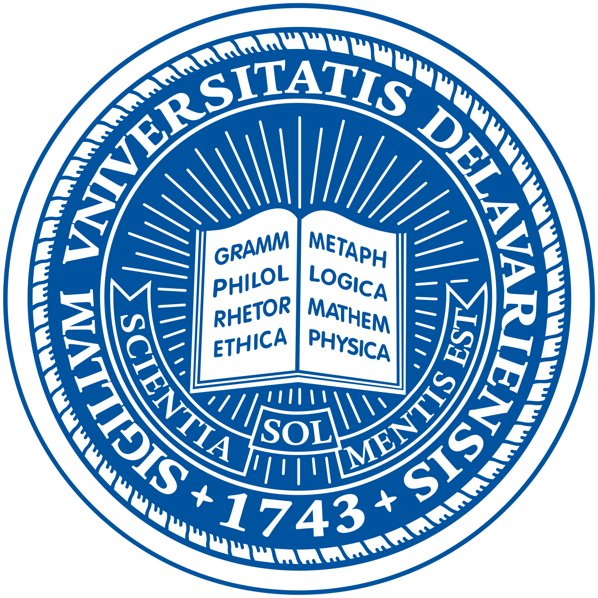

Jiahao Xie (谢佳豪)
Ph.D. student, Computer Science |
About me
I am currently a Ph.D. student at University of Delaware , where I am supervised by Prof. Amo Tong .
I obtained my B.Sc. degree (ranked top 1 out of 41 students) in the School of Traffic and Transportation Engineering in June 2022 from Central South University . In 2024 spring, I was admitted as a PhD student of University of Delaware
Research Interests: Machine Learning, Deep Learning, etc.
Educations
|  | Ph.D. student, University of Delaware, DE, USA [2024.2 ~ ]
|
|
|
Ph.D. student, Central South University, Changsha, China [2022.9 ~ 2023.12]
|
|
|
B. Sc, Central South University , Changsha, China [2018.9 ~ 2022.6]
|
Publications
Mengmei Zhong, #Jiahao Xie#, Yao Feng, Shao-Hui Zhang, Jiangnan Xia, Li Tan, Ningxin Chen, Xiaolin Su, Qian Zhang, Yunzhi Feng* and Yue Guo*. Causal effects of the gut microbiome on COVID-19 susceptibility and severity: A two-sample Mendelian randomization study. Frontiers in Immunology. (co-first author, JCR Q1)
Shaohui Zhang, Yao Feng, Mengmei Zhong, #Jiahao Xie*#, Wei Xu*. Association between oxidative stress and chronic orofacial pain and potential druggable targets: Evidence from a Mendelian randomization study. Journal of Oral Rehabilitation. (co-corresponding author, JCR Q2)
Xirui Chen, Hui Liu, Yamin Fang, Mengshuai Su, #Jiahao Xie#. Rotor Fault Feature Extraction Based on Low-frequency Sampling Vibration Signal. IEEE 2023 7th CAA International Conference on Vehicular Control and Intelligence (CVCI).
Invention Patents
A Topological Optimization Method and System for Multi component Structure of Mortise tenon Interlocking Connection
Bing Yi, Yongfeng Song, Haowen Zheng, Wencheng Zheng, Mingjie Guo, *Jiahao Xie*, Honglei Xu, Renkai Sun, Ying Zhang, Yanjun Zhong
China Invention Patent, Publication Patent Number: CN112883619A
Utility Model Patents
An Automatic Calibration Device and System for Fuel Cell Engines
*Jiahao Xie*, Neng Wang
China Invention Patent, Publication Patent Number: CN214426975U
A Fast Connection Device for Stack Test
*Jiahao Xie*, Neng Wang
China Invention Patent, Publication Patent Number: CN214535698U
Software Copyright
TAT Smart Time Management Master V1.0
*Jiahao Xie*, Yuchong Peng, Hande Kong, Taiting Yu, Jinwei Hu
Computer Software Copyright, Accession number: 2022SR0177414
Other Project
TAT Smart Time Management Master
Project Leader;
The University Student Innovation and Entrepreneurship Project of Hunan Province, No. S202010533183X
Vertical Sharing of CSU Learning Resources
Project Key Member;
The University Student Innovation and Entrepreneurship Project of Hunan Province, No. S202010533183X